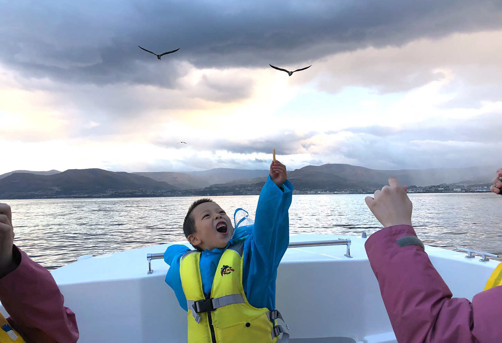

| 仕事も子育ても「すべてうまくいく」ママ起業の秘訣 | |
| 髙瀬可奈子 | |
| Hitotsuku Publication (2018) | |
起業するまでの私の人生は、人から嫌われないように、人の目を気にして生きる人生でした。
人の波から外れないように、目立たないように、いい子でいようとしていました。
学生時代は自分の意見を言えず、「人と違うことは悪いこと」「人と違うことは恥ずかしいこと」、そう思って人に合わせ続けてきました。
つまり、自分の意思がない人生。
つまらない人生。
結婚していた時も、元旦那さんに嫌われたくないから、彼の機嫌をいつも伺い、いろいろ尽くしてきました。
それは結局彼を甘やかして、次第に彼のお母さんになっていくという状況に。
次第に夫婦はすれ違い、子供を抱えて離婚することに。
未来が見えなくてお先真っ暗。
子供にも未来を見せてあげられなくて、我慢ばかりさせて寂しい思いをさせる日々が続きました。
そんな生活をずっと続けるのが嫌でした。
こんな生活からどうしても抜け出したい！
今やらなきゃ、私はきっとずっと変われない！
そう思い、理想の未来を手に入れるために、起業という世界に一歩を踏み出しました。
周りの友達からは、「やめときなよ」「怪しい」「うまくいくわけない」と反対され、理解されず、ただただ心配されました。
でも......自分を変えたい！
その思いだけを胸にビジネスを始めました。
ビジネスを始めて、時間とお金の自由を手に入れて、やっと未来が見えるようになりました。
子供にも、未来に向けて夢を見せてあげられるようになって、好きなことをさせてあげられるようになりました。
何より一緒に過ごす時間が増えたから、親子の笑顔が増えました
。
雇われるだけが仕事ではない！ もっと自由な働き方があるのです。
「子供が小さいからできない」ではなく、「子供が小さい今だからこそ今やる」
のです。
私はあの時に一歩踏み出してよかったと、心から思います。
子供は親の背中を見て育つから、まずはお母さんであるあなたが好きなことをしましょう。
そして輝いている姿をどんどん見せましょう。
子供にも未来を、夢を見せてあげられるから
。
本書では、ママが起業に向いている理由やおすすめの方法、起業するにあたっての準備や心構えについて、何もないところから始めた私自身の経験を踏まえて紹介しています。
普通のママからでもみんな変われるから、もっと世の中のママ達にも幸せになってほしい！ 幸せになるママを増やしたい！
こんな私の思いがたっぷり詰まっています。
起業という新しい生き方を始めようか迷っているあなたが一歩踏み出せるよう、何らかのヒントになれば幸いです。
起業する前、私は歯科助手をしていました。
最低限の収入の安定はありましたが、朝の８時半から夕方の７時半までと長時間勤務先に拘束される状態でした。
仕事が終わると実家に預けていた子供を迎えに行き、寝かしつけるだけの毎日。
子供と顔を合わせているのは、一日にたった２時間半でした。
朝もとにかく忙しくて常にバタバタしていましたから、子供に対しても「早くして早くして！」「何してるのよ！」とイライラすることがよくありました。
今思えば、とてもつらい思いをさせていたと感じます。
金銭的にも子供と２人でギリギリの生活でした。
毎日通帳を見てはため息をつき、「今月どうしよう......」と悩んでばかり。
好きな物を買ってあげられない、自分で買えないから実家に頼って買ってもらうという状態でした。
言ってみれば、自分の未来が見えない日々でした。
「この先どうしていったらいいんだろう」「貯金もできていないし、私はこの先どうやって生きていくんだろう」と。
お金がないので、子供にも未来を見せてあげられません。
「行きたい学校があっても行かせてあげられないのではないか」「子供の夢を応援してあげられないのではないか」と不安でした。
私自身は幼いころから習い事などを、両親に好きなようにさせてもらったのですが、このままでは私が両親にしてもらったようには子どもにしてあげられない、夢や未来を与えられないと思いました。
だから今のままの生活ではいけない、どうにかしてこの生活を変えたい！ という強い思いがありました。
そんな生活を送っていた時、今私が講師を務めているビジネススクール、ハッピーリッチママの講師の方のインスタグラムを見つけました。
インスタグラムには副業などの広告がとても多いので、それまでは一切気に留めていなかったのですが、その講師の方の投稿はなぜかとても気になったんです。
早速調べてみると、ＬＩＮＥの登録からスタートできると知り、すぐに登録してメッセージを送ってみました。
私がメッセージを送った方は、私と同じシングルマザーでした。
男の子のママという点も共通していて、「あ、シングルマザーでもこんな風に変われるんだ」と驚いたことを覚えています。
と同時に、「私でもここでならできるかもしれない」「私も同じようにやればできるかな」と思いはじめ、そして「今やらなければ」という思いへと変わっていきました。
実は、当時やっていた歯科助手の仕事はただこなすだけという感じで、やりがいがありませんでした。
周りの同僚はとてもやる気があるのに比べて、私だけ冷めている状態。
何となく仕事に打ち込めず、居心地がよくありませんでした。
くわえて、その前から「自分が好きなことをやりたいな」「自分でやっていきたいな」と漠然とながら思っていたのです。
だからこのインスタグラムの投稿を見つけた時は、「あ、今がチャンスだ！」とピンと来ました。
私は直感で動くタイプですから、このチャンスを生かすしかない、まずやってみようと思いました。
そこで７年かけていた個人年金の返戻金と子供手当を元手にし、ハッピーリッチママのビジネススクールに入りました。
金銭的にも精神的にもギリギリの生活ですから、本当は始めるのがとてもこわかったです。
それでも、「ここで変わらなければ、何か始めなければ変わらない！」「どうしてもこの生活から抜け出したい！」と思い、一歩踏み出しました
。
人生を変えようと決めて。
ビジネススクールに入ったばかりの頃は、「うまくいくだろうか......」と不安でいっぱいでした。
自分にできるのだろうかと何度も考えていました。
しかし学んでいくうちに、どんどん面白くなってきました。
学んだことを実践して、うまくいくと楽しさが大きくなってきて、「こうすればいいんだ！」とワクワクすることが増えてくるんですね。
少しずつうまくいく、つまり小さな成功体験を積み重ねていくとどんどん結果が出てきて、うまく回りはじめました。
実は私はとても人見知りで、話すのが苦手でした。
お客様と通話する機会が多いものの、初めはまったく話せず、なかなか話を盛り上げることもできず、自分でもだめだなあ......と感じていました。
けれど「こうしたらいいよ」と指導してもらうことによって、話すことに慣れてきて、今では自信をもってコミュニケーションを取れます。
パソコンの操作も起業時にはほとんどできませんでした。
ブラインドタッチすらできず、指１本でキーボードのキーを１つずつ叩くような状態でしたが、このビジネスを始めるにあたって練習を続け、今ではスムーズに操作できるようになりました。
こうして振り返ると、「できないことをできないと諦めずにやってみる」ということは、とても大切だと感じます。
苦手だからやらないのではなく、苦手だからこそどんどんやっていって、慣れていけばむしろ得意なことになっていくのです
。
やれば何でもできるということを、私はこうした体験から痛感しました。
やっていくうちにどんどんできるようになってくると、「できなかったらどうしよう」ではなく「とりあえずやってみる」と意識も変わってきます。
以前なら「失敗したらどうしよう」と石橋を叩いて渡るような性格でしたが、成功するための積極的な考え方を取り入れることによって、「この方法でうまくいくならまずやってみよう」と考え方が変わり、それがまた成功へ、そして成長へとつながっていきました
。
「失敗してもいいからやってみる」というポジティブな考え方になり、「やらない選択肢」は取らなくなったという変化が一番大きいです。
だから今もどんどん前進できているのだと思います。
初めに投資した額はそこそこ大きかったですが、後から得られるものはもっと大きい。
何事もリスクを取ってこそのリターンです。
ノーリスクでハイリターン、なんてことはありません。
ある程度のリスクを負うことで、頑張る原動力に変えていくことが大切です。
私がおすすめしているのは、起業時に「人と心の断捨離」をすること。
これはとても大切です。
私がビジネスを始めるにあたって断捨離したのは、まず仕事でした。
起業しようと決めた当時は歯科助手をしていましたが、もともと２つのことを同時進行させていくことが苦手でしたから、「今の仕事をしながら起業するのは無理！」と思ったんですね。
中途半端にやるのは嫌ですし、やるなら集中して早く結果を出したかった。
そう考えて、ビジネスを始めると決めた２日後に辞表を出しました。
歯科助手をやめたことで収入はなくなったので、私に残っていたのは残り少ない通帳残高と最後のお給料だけ。
これを合わせたら３ヶ月分の生活費でしたので、「３ヶ月以内に結果を出せばいい！」と決めて必死に学び、学んだことを素直に実践しました。
その成果が、達成目標より時期も金額もクリアした「２ヶ月で月商１５０万円」でした。
焦りや不安はもちろんありましたが、今思えば「３ヶ月以内に結果を出す！」というこの覚悟で仕事をやめ、自分を追い込んだからこそ早く結果を出せたのだと思っています。
「仕事を辞めたら生活できなくなるから、結果が出たら辞めます」という人が多いのですが、逆です。
ビジネスにかける時間も労力も少ないですし、お給料があるから危機感がない。
成功したいなら、時間も労力も最大限ビジネスに費やすべきです
。
結果を出すために仕事を辞めるということを、覚えておいてほしいです。
さらに断捨離したのは人。
ママ友や友人との付き合いを整理しました。
断捨離する前、私の周囲にもママ友や友人がたくさんいたのですが、彼女たちの月収平均は約10
万円でした。
つまり、私のいた環境の基準値は月収10
万円の世界だったというわけです。
旦那さんへの愚痴、子供のこと、セール情報のやり取り、「あの頃はよかった」という過去の思い出話......。そういった話題が主な彼女たちは、月収10
万円を稼ぐ方法は知っていても、月収１００万円の稼ぎ方は知りません。
そういう輪の中にいる間は、月収１００万円を稼げるようにはなりません。
しかもビジネスを始めた私に対して、「やめときなよ、無理だよ」とネガティブな意見ばかり言ってきました。
彼女たちといても理解してもらえないし、私はここで変わりたいからやるんだと思っていたので、価値観の違いを感じて距離を置くことにしたのです。
その代わり、月商６０００万円の経営者や月収５００～６００万円のママ起業家といった方々がいる環境に飛び込んで、私も月収１００万円を稼ぐ方法や情報を学び、スキルを手にすることができました
。
もう一つ断捨離したのは価値観
です。
稼げなかった今までの価値観や考えを捨てなければ、変われません。
捨てた上で、起業家としてビジネスを成功させる価値観へと変わっていかなければいけません。
普通のママの価値観では成功できないのです。
仕事、人、価値観。
これらを断捨離した結果、今の私がいます。
それまでの私は、人の目を気にして人に合わせようとする生き方をしていましたが、人と同じことをしていては人と同じ結果しか出ません。
人よりも成功したい、稼ぎたいと思うのなら、人とは違うことをしなければいけないのです
。
現在、コンスタントに月商７桁を稼げるようになったと同時に、子供との時間がたっぷり取れるようになったことがとてもうれしいです。
今までは子供と顔をあわせられるのが２時間半しかなかったのが、今は保育園へのお迎えも行けますし、一緒にお風呂に入って美味しいものを食べて、一緒に眠れます。
子供がやりたいことをさせてあげられますし、行きたいところに連れていってあげられます。
子供と向き合える時間が増え、それにあわせて私も子供も笑顔が増えました。
起業当初に子供と約束していたことがあります。
それは、一緒に北海道旅行に行こうという約束でした。
子供がイクラが好きなのですが、冬の北海道では生の美味しいイクラが食べられると聞いてこの約束をし、私の目標としました。
そしてこの約束をかなえて２０１８年10
月に北海道へ行き、生のイクラをたっぷりと食べさせてあげることができました。
今までならお金を気にしながら旅行をしていたのが、今ではお金を気にせずに好きなことをして好きなものを食べていろんな体験をし、いいホテルに泊まってすばらしいおもてなしを受けられるという、とても有意義で満足できる旅行でした。
お金に余裕ができることによって、選択肢は増えます
。
これまでならいかに安く旅行するかを調べて、旅行に行っても常にお財布を気にしなければならず、心から楽しめませんでしたが、お金を得ることによって、金額ではなく自分の好きなことに合わせて選択できるのです。
今回の北海道旅行で子供が見せた笑顔は、まさにプライスレス。
帰ってきてからも、何度も「あの時は楽しかったね！」と、子供と楽しい旅行の思い出を分かち合えるのもプライスレス。
ずっとしたかった両親への恩返しも、少しずつできるようになってきました。
社会人になってからもずっと両親に頼りっぱなしで、結婚後もお金がなかったために、食費や日用品の買い物などを実家に頼っていました。
しかしスクールで学んで稼げるようになり、自立できたことで、少しずつ恩返しができています。
８月の母の誕生日には、これまで何もしてあげられていませんでしたが、少しリッチなお祝いをすることができて喜んでもらえました。
来年の夏には、両親と子供と一緒にハワイ旅行に行きたいと思っています。
自分に対してもお金を使えるようになったという変化にも満足しています。
毎月美容院に通えるようになりましたし、まつエクなどにもお金をかけられるようになりました。
ずっと憧れだったプラダの財布が買えた時は感激しましたね。
時間に余裕できたので、以前から学んでいたローフードの知識を生かした自宅教室を、時々開いては友人たちに教えたりと、好きなことも楽しんでいます。
お金だけがすべてではありませんが、お金があるからこそすばらしい体験ができて、幸せな時間を得ることができるのです。
こうした生活ができるようになって、あの時に思い切って起業してよかったと心から思います。
私が講師として入っているビジネススクールの受講生で、実際に起業した方が５人います。
皆さんどんどん成長してきています。
「こうしたらいいよ」と指導すると、「分かりました」といって改善して成長し続けている姿を見ると、私もとてもうれしいです。
実際に私が講師をしているビジネススクールに入って、頑張っている皆さんの体験談をいくつかご紹介しましょう。
・Ｎさん（20
代）
もともとは、ご自分で美容サロンを経営されていました。
個人事業主としては経営が成り立っていましたが、人を雇ってビジネスを大きくしようとなると、うまくいかず悩まれていました。
また、ご結婚の予定があったため、「今後子供が生まれた時に動けなくなるから、それまでに別の収入の柱をつくりたい」と考えてスクールに入られました。
美容サロンを経営されているだけあって、マインドの高い方だったので、スクールで学びどんどん実践していかれた結果、25
日で月収１５０万円を達成されました。
サロン経営に対しても、スクールで学んだことをアウトプットとして実践したことで、周囲からは「すごく変わったね」「何を始めたの？」と言われるように。
美容サロンの経営も軌道に乗ったため、今後もスクールで学んだことを生かしてますます飛躍したいと、意欲的にビジネスを進めておられます。
・Ｔさん（20
代）
モラハラのご主人から逃げるようにして、３人のお子さんと共に別居し、実家に住みながら離婚協議中でした。
専業主婦で車の免許もなく、子供が生まれてからほとんど働いたことがないので、収入としては内職での月数千円という状態。
今後離婚して一人で子供たちを育てていかなければいけないのに、この先どうしよう......と思っていた時に、私のブログを読んで「私も変われる」と思ってビジネススクールに入られました。
実家を出て、自立して子供たちと生活できるようになることを目標に頑張っていて、３ヶ月目で月商２００万円を達成されました。
・Ｗさん（30
代）
２人の子供のうち１人が自閉症のため、療育施設に通わせるためになかなか働きに行けず、専業主婦でいるという状況でした。
先のことを考えるともっと収入が欲しいという思いと、得意なシフォンケーキ作りの腕を生かして、ゆくゆくは自閉症の子供も働けるようにシフォンケーキのお店を経営して、子供に未来を見せていきたいという思いから、ビジネススクールに入られました。
・Ｕさん（30
代）
子供が生まれてからすぐに離婚し、その後３年間学校に通って看護師の資格を取ったシングルマザーです。
看護師になったのはいいけれど、とても毎日が忙しく子供との時間が取れない、親に預けっぱなしで自分で面倒を見ることができないのが悩みで、子供との時間がつくれるよう訪問看護の仕事に変わりました。
おかげで子供との時間はとれるようになったものの、大きく年収が下がってしまって悩んでいたところ、私のブログ記事を読んで、「私も時間と年収を確保できるスタイルになりたい」とビジネススクールに入られました。
・Ｉさん（40
代）
高校生の子供がいる中で昨年家を建てたものの、70
歳まで支払いが続く住宅ローンと、子供の大学進学とを両立させなければいけない状況でした。
ちょうど思春期に入った子供とは衝突が多いため、自分が変わってやりたいことをし、生き生きと働いてその姿を子供に見せれば、子供との関係も改善できるのではないかと考えて、スクールに入られました。
「変わりたい！」と決心してスクールに入るという行動を取る、そして私の支援を受けて結果を出す、そんな皆さんがいることは本当にうれしいものです。
「できない」と初めから諦めるのではなく、挑戦していってほしいです。
もっと自由な働き方があるのだということ、思いさえあれば変われるのだということを、１人でも多くの方に知ってほしいですね
。
子供が生まれて日々成長していく姿を間近で見るのは、とてもハッピーなことですよね。
赤ちゃんの頃、幼稚園に入った頃、小学生の頃......たくさんのはじめてを共有して、時には叱ったり一緒に泣いたりしながら、ずっと一緒に過ごしてきたわけですから、子供は本当に大切な存在です。
けれど、子供がどんなに大切な存在であっても、意思の疎通がままならない時期や反抗期で何でも放り投げたりする時期がくると、ママは心身ともに疲れてしまいます。
自分のことは自分でできて、言葉で考えを伝え合える大人どうしの生活とは大きく違うわけですから、ストレスはたまるばかり。
出産前にショッピングに行ったり、友人とランチに行ったりしていたのもままならない日が増えて、自分の楽しみって何なんだろう......？ と考えることも多いのではないでしょうか。
加えて、子供が成長するにつれて、子供はママと一緒の世界とは違う世界に触れる機会が多くなり、一緒にいない時間も増えてきます。
ママが一番ではなくなってくるのです。
成長する上で自然な変化だと分かっていても、何となく寂しい気持ちになりますよね。
そしてこう思うことが一度はあるはずです。
私も私の人生を生きたい！
子供は確かに大切な存在だけれど、あなたとは違う一人の人間で、あなたとはいずれ違う人生を送るようになります。
ですから、あなたもあなた自身の人生を大切にしてほしいのです。
もし育児や家事をしなくてもいいとしたら、本当は何をしたかった？
昔から胸に秘めていた夢を、実はまだあきらめていないのでは？
ママでも妻でもない、一人の女性としてどう生きていきたいのかを考えて、自分が輝く人生を手に入れたいと考えるのは、ママであっても同じこと。
人生は一度きり。
同じ生きるなら、得意なことや好きなことが思う存分できる人生を歩みませんか？
ママはもっと自由になっていいんです
。
一度でも起業することについて学んだり、情報を集めたりしたことがある人なら、こんな話を見たり聞いたりしたことがあるはずです。
あなたの強みを生かしましょう。
市場のニーズに合ったビジネスをしましょう。
自分でビジネスを行うということは、提供した商品やサービスに対してお金という対価をもらうことですから、人よりも秀でた部分を生かすことや、需要があるかどうかを判断することはもちろん重要です。
しかし、それだけでは起業はできてもビジネスはできません。
起業とはビジネスを自分で始めることを意味するので、言ってみれば誰にでもすぐできますよね。
「私はこれができます！」「こういうものが作れます！」と言えば起業であって、そこに実績があるかどうかは関係ないからです。
しかし、ビジネスを行うというのは、商品やサービスを提供し続けて成立するもの。
継続できなければビジネスとは言えません。
ではビジネスを継続するには何が必要か？
それは、熱意
です。
誰にも負けないくらい熱中できる、熱意をもって取り組めるモノやコトがあるかどうか。
つまり、強みを生かせて、多くの人のニーズにも合う仕事を強い熱意で続けていけるなら、あなたは起業してもうまくいく人だと言えるでしょう。
起業って何だか難しそう......。
何から始めたらいいか分からない......。
私には遠い世界の話だよね......。
起業についてお話ししていると、必ずこういった声を耳にします。
確かに「起業」「ビジネス」といった単語は、日常生活ではあまりなじみがないから、自分のこととして考えるというのは現実味がないかもしれません。
けれど、「はじめに」でも触れたように、今や働き方にはさまざまな形があります。
会社に雇用されて社員やパートとして働くだけでなく、フリーランスや起業というのも立派な働き方のひとつ。
起業という働き方は、いわば「自分で自分の仕事をつくる」こと。
とても創造的なことなんです。
私は、起業は次の３つがあればできると思っています。
ひとつはきっかけ
。
たとえば今の生活で不満に思うことが出てきたり、「変わりたい！」と感じたらチャンスです。
次は熱意
。
誰にも負けないほどの熱意をもって取り組める何かがあれば、起業向き！
最後は責任感
。
何でも決められるということは、すべての責任を自分で負うということですが、その覚悟があればＯＫ。
難しいことを考える前に、自分にこの３つがあるかを考えてみましょう。
もしあるなら、あなたは起業家の素質があるはず。自信を持ってくださいね。
いわゆる社長と呼ばれる人は男性がほとんどです。
日本では、全社長のうち女性社長はわずかに７．８％
。
まだまだ少ないのが現実です。
けれど私は、今後ますます女性社長は増えてくると考えています。
なぜなら、長い間男性優位だった経済社会が確実に変化しているからです。
たとえば、商品の広告に「ママが選んだ～」「女性の意見を取り入れた～」といった表現をされているのを見たことはないでしょうか。
住宅や自動車、電化製品などの業界では、女性対象のマーケティングに力を入れていて、商品のプロモーションも女性に焦点を当て始めています。
実際、消費の鍵を握るのは夫ではなく妻、男性ではなく女性というのはすでに常識で、女性ならではの感性を取り入れた商品が売れるというのも事実。
大企業でも女性を中心ターゲットとした商品開発をしているということは、社会的に女性の感性が受け入れられてきているからと言えます。
男性がどれだけ知恵を絞っても、女性のこまやかな視点や日常生活に根差した感性を生かした商品は生まれません。
ということは、女性であるというだけでビジネスをするのが有利という状況は確実にありますし、今後もどんどん増えていくはずです。
さらにいえば、ママという立場も男性にはない視点や感性を生かせる条件です。
子供を産み、育てていく中で培えるものは、本当にたくさんありますよね。
シングルマザーなら、一人で子供を育てているという体験をしているからこそ持てる視点があります。
今のあなたにとっては普通すぎることでも、社会に出たら新鮮な視点や豊かな感性だととらえられることも少なくないのです。
ことさらに女性を強調しなさいという意味ではなく、女性が自然に持ち合わせているものをビジネスに生かせば、今の社会にはない新しい商品やサービスを生むチャンスは大きい
ということ。
そういう意味で、女性は起業に向いていると断言できます。
自分でビジネスを始めたり、続けたりしていると、時間の重要性をいろんな場面で感じるようになります。
考えなければいけないこと、しなければいけないことはたくさんありますし、こなしてもこなしても次々とこうした事柄は発生するからです。
特にママの場合は、家事や育児にも時間を割かなければいけないですから、ますます時間の使い方を上手に行わなければなりません。
子供が小さければお世話に時間を取られますし、小学生になればＰＴＡをはじめとして学校行事にも顔を出さなければいけない。
中学生や高校生なら、塾や部活動などをフォローすることも必要ですよね。
そしてシングルマザーなら、こうしたことを一人でこなさなければいけません。
起業していなくても家事や育児で自分の時間はないし、睡眠時間も削っているといったママも多いのではないでしょうか。
成功しているママ起業家も、こうした状況は同じです。
起業しているからといって負担が軽いわけではなく、ママとしての責任や立場は同じです。
ただし、時間の大切さをとてもよく分かっています。
何かひとつしなければならないことが起きたとしたら、「これはどれくらいの時間で片付くだろう？」と常に考えて行動します。
すき間時間ができたら、だらだらテレビやインターネットを見たりせず、10
分15
分でできることを考えてすぐ行動します。
そして、人の時間を奪わないことも心掛けている人が多いですね。
電話した時、何かをお願いした時、相手の時間を使わせているという意識が常にあるから、無駄話はしないし無茶なお願いもしません。
成功しているママ起業家は、総じて自分の時間を効率よく使うこと、他人の時間を無駄に奪わないことを意識している
と言えますね。
夢を抱いたり目標を立てたりするのは、起業してビジネスをしていく上でとても大切なことです。
たとえば「３年後にお店を出す」といった具体的な夢があれば、やる気が出ますし、わくわくした気持ちで頑張れますよね。
成功するママ起業家とそうでないママ起業家との違いは、夢を実現するための行動のしかた
です。
成功するママ起業家は、３年後にお店を出したいという夢を実現するために、細かい目標を設定します
。
３年後にお店を出すためには、２年後にどうなっていたいか？ を考えて目標を決めます。
１年後には？ 半年後には？ とどんどん逆算していくのです。
そうすると今月何をしなければいけないのか、今週は何をしなければいけないのかが分かりますよね。
そうやって細かく設定した目標をクリアして、小さな成功体験を積み上げていくのです。
「何をしたらいいのか分からない」という人は、いきなり最終的な夢をめざしてしまうからです。
目標が遠すぎて、やるべきことが見えないから起業は難しそう......となってしまうのです。
ある山の頂上をめざす時、いきなり頂上へジャンプして到着！ ということはありませんよね？
まずふもとから、一歩ずつ登りはじめて、時間をかけて五合目、六合目、七合目......と進んで頂上にたどりつくわけです。
ビジネスも同じ。
成功するママ起業家は大きな目標であればあるほど、それをかなえるためのステップを細かく設定して、それをひとつずつクリアすることに集中します。
まさに塵も積もれば山となる、なのです。
２０１４年に発行されベストセラーとなった『GIVE&TAKE』という本をご存じでしょうか。
この本の副題は「与える人こそ成功する時代」。
おそらく起業して順調にビジネスが進んでいる人なら、共感できるフレーズでしょう。
起業家が集まる交流会にあなたが参加したとします。
自分のビジネスに関するパンフレットやチラシをたくさん準備して、「こんなことを私はしています」「この商品が人気なんですよ」とＰＲし続けるＡさんがいました。
一方で、「どんな事業をされているのですか？」と相手の話をまず聞き、「その方面に詳しい知り合いがいます、紹介しますよ」と提案してくるＢさんがいました。
さて、どちらともう一度会いたいですか？
一見Ａさんはビジネスに熱心で積極的に見えますが、言動はすべてＴａｋｅです。
つまり相手にしてほしいこと、自分にとってのメリットだけを求めている言動ですね。
対してＢさんは、自分のビジネスの話は自分からは言わず、相手の話の内容に合わせて自分が提供できそうな情報を出しています。
これはＧｉｖｅ、与える言動です。
自分中心で行動する人と、相手中心で行動する人。
次にどちらともう一度会いたくなるかと考えたら、後者に決まっています。
ビジネスでは、「次も会いたい」「この人に話したい」と思ってもらえるかがとても大切です
。
なぜなら先ほどもお伝えしたように、ビジネスとは継続してこそ成立するものだから。
人は何かをしてもらうと、いつか返したいという気持ちが無意識に働きます。
何かをしてもらおうと直接的に動くよりも、まず相手のために行動する方が、後から返ってくるものは大きいということです。
目先の小さな利益にとらわれず、「先に与える人」になってのちのちの大きな利益につなげる、そんな考え方ができるのが成功するコツです。
「働く」と聞くと、会社に入って正社員やパートとして働くという姿をイメージする人がほとんどかと思います。
これまでの社会がそういう構造になっていたのですから、このイメージを持つのは自然なことです。
「まだ子供が小さいから外に働きに出られません」
「家事や子供の習い事の送り迎えのことを考えると、働ける時間帯の仕事がありません」
仕事はしたいけれど、こういった悩みを持っていて一歩を踏み出せないというママは多いでしょうし、シングルマザーなら動力が１つしかないのですから、なおさら悩みが深いのではないでしょうか。
もし今この本を読んでいるあなたも同じ悩みを持っているなら、私からひとつアドバイス。
今はいろんな働き方があるから、自分のスタイルに合わせて選ぼう！
働き方の形として今でも主流である正社員やパートに加えて、今はフリーランスや起業、在宅ワークなどいろんな働き方があります。
その中には、インターネットを介して仕事の受発注から納品、報酬の支払いや受取りまでができる働き方が、この10
年ほどで急速に広がってきています。
得意なスキルを活かして企業と仕事ができるクラウドソーシング。
実際の店舗を持つことなく、仕入れたり製作した商品を販売できるネットショップ。
自身のホームページやブログを通して提供するコーチングやコンサルティング。
インターネットを使うことで顧客対象は全国に広がりますし、多額の資金も不要。
言ってみれば明日からでも今日からでも、準備して始めることができる働き方です。
「働ける条件が合わない」とあきらめないで、働く場所や時間に縛られない働き方があるということを知りましょう。
考え方が変われば、行動するために環境を変える気持ちが生まれます。
今のあなたができることからスタートする、これが起業の成功ポイントのひとつです。
ママに限らず、女性が起業する時のパターンとして多いのが、ひとりで何もかもしようとすることです。
やりたいことはあるのだけれど、失敗した時のことを考えて、周りに言わずにひとりでやろうとする傾向が男性よりも強いです。
もしかしたらあなたも「まずひとりでやってみよう」と考えていませんか？
もちろん、あなたのビジネスですから、あなた自身が頑張らなければならない場面はたくさんあります。
いざという時は、あなたの経験や知識や人格が決め手となる部分も多いでしょう。
それを踏まえても、私はひとりで頑張らないで周りにサポートを求めてほしいと思います。
理由は２つ。
あなたとは違う考えを知ることで、視点が広がるから。
そして苦手なことを得意とする人に任せれば、あなたは得意なことに集中できるから
。
起業する時に周囲にサポートを求めることは、恥ずかしいことでもなんでもありません。自分のビジネスだからといって、自分だけですべてやらなければならない......なんてことはまったくないんです。
たとえばあなたが、文章を書いて表現するのは得意だけれど、数字に弱いとしましょう。
ブログの記事を書く時間を減らして、苦手な帳簿のつけ方や確定申告の勉強を頑張るか。
経理が得意な知人に一定の報酬を出して帳簿つけをお願いして、自分はブログ記事を10
本20
本書きためるか。
どちらがよりビジネスの広がりにつながりやすいと思いますか？
起業の手続きが分からなければ、ネットで自分の事例とは違う内容を延々と探すよりも、専門の無料相談窓口に行って聞くのが早いですし、ホームページを作りたいけれどスキルがないなら、専門業者に依頼するのが効率的。
ただでさえ忙しいママが起業するのに、ひとりで何もかもやろうとするのは労力も時間ももったいない！
サポートは必要経費だと考えて、周囲や専門家の手を堂々と借りましょう。
「起業してうまくいかなかったらどうしよう」
「自分で決められるのはいいけど失敗したらいやだな」
こういう不安が消えなくて、起業する勇気が出ないという人もまた多いですね。
先に言っておきます。
起業したら必ず失敗します。
一度は必ず。
起業してずっと、成功し続けるなんてありえません
。
幼いころ、自転車の練習を始めた時のことを思い出してください。
初めは補助輪をつけて、おそるおそるこぎ出しましたよね？
カーブが上手に曲がれなくて何度も止まりませんでしたか？
慣れてきて補助輪を外したら、両手で自転車を支えることすらきつかったはず。
うまくペダルをこげなくて、何度も何度も倒れて、けがをしながら上手になっていったはず。
起業も同じです。
失敗しながら学んで、自分なりのスタイルができてくると同時に、少しずつできることが増えてくるのです。
失敗してもあきらめないで、「次はどうしたらうまくいくか」を考えればいいのです。
ビジネスはトライ＆
エラー、つまり挑戦して失敗したことをもとにまた挑戦する、その繰り返しを積み重ねることです。
今成功しているママ起業家の皆さんも、起業してからずっと成功してきたわけではありません。
いろんな失敗を重ねて、それでもあきらめずにたからこそ、今の成功があります
。
もう一度言います。
起業してまったく失敗しない人なんていません。
失敗を失敗としてあきらめず、経験として積み重ねられる人はきっと成功できます。
起業したいというママから相談を受けた時、私はいつもこの質問をします。
「その商品やサービスをあなたが提供する理由は？」
「その商品やサービスをお客様があなたから提供されるメリットは？」
初めの質問は答えやすい人も多いかもしれません。
「この商品のよさを伝えたいから」「自分の知識を生かせるから」「出産前に〇年やっていてスキルがあるから」などなど、比較的スムーズに出てくるものです。
次の質問はどうでしょうか。
この答えがすっと出てくる人は多くありません。
よほど特殊な知識や立場上の経験がない限り、商品のよさを説明できる人、知識が豊富な人、経験が長くてスキルがある人は、あなた以外にもたくさんいるからです。
しかしお客様に選んでいただくには、「あなただから」という理由が必要ですよね。
ここで武器になるのが、あなたの個性、いわゆるキャラクターなのです。
知識や経験やスキルはマネできても、あなた自身のキャラクターをそっくりマネできる人はいないからです。
といっても、奇抜なファッションをしたり、刺激的なブログ記事を書き続けたりといったことをしなさいと言っているわけではありません。
芸能人ではないのですから、本来の自分とかけ離れたキャラクターを設定する必要などありません。
このビジネスをどんな思いでやっているのか。
この商品やサービスを提供することで、お客様の悩みをどのようにフォローできるか。
同業他社と比べてどういった点が違うのか。
「これを買うならこの人から買いたい」とお客様に感じていただけるような理由をきちんと説明できること、これは起業しビジネスを進める上でとても重要なことなのです
。
男性より女性が起業する分野として突出して多いのは、ハンドメイド系やマッサージ系です。
ハンドメイド系とは、布雑貨やアクセサリー、子供服、ブリザーブドフラワーなど手作りしたものを販売する方法です。
ショッピングモールやイベントにブースで出店する以外に、インターネット上のハンドメイドマーケットで販売することもできるようになってきました。
子供の服やグッズを手作りしている間に、作ること自体が楽しくなり、仕事にしたいと考えるママは多いですね。
マッサージ系は、ヘッドやハンド・フットなどの部分マッサージや全身をほぐすリンパマッサージなどを提供する方法です。
講習で資格を取得し、自宅の一室をサロンとしてオープンさせるパターンが多いです。
自宅サロンなら自分の空いている時間だけ営業することができますし、移動の手間もかかりませんから、育児や家事と両立したいママには適したカタチと言えるでしょう。
日々家事を行っているママにとって、日常生活での経験を生かして起業するパターンも少なくありません。
代表的なものとしては、料理系や掃除系があります。
料理系は、家庭料理をはじめお菓子やパン、薬膳料理などの、オリジナルレシピにもとづいてつくり方を教える教室タイプと、移動販売やショップ販売という形で完成した状態で提供する販売タイプに分かれます。
販売タイプの場合は保健所への申請が必要ですから、ややハードルが高いです。
掃除系は、家事代行サービスが例として分かりやすいでしょう。
最近は共働き世帯が増えてきていますから、掃除や庭の手入れなどを外注サービスに任せたいという社会的なニーズの高まりにマッチしたビジネスと言えます。
第１章でも少し触れたように、企業は女性の視点や感性を重視して、商品やサービスの開発を進める傾向が強くなっています。
これまでなかった商品やサービスの中で、「こんなのが欲しかった！」と女性を中心にヒットする商品やサービスは、たいてい女性が開発に関わっていると言われています。
コーディネート系は、プロの視点からお客様の好みに合わせた商品提案をするもので、ファッションやインテリアが多いですね。
自分の体形に合った着こなしをしたい、心地よい空間で過ごしたい、そんなニーズを汲み取ったビジネスです。
育児系は、ベビーシッターのような保育サービスは公的機関からも提供されているので、産褥期のママ向けの料理補助やベビーマッサージなど、ママや赤ちゃんに対するサービスの提供が多いです。
女性ならではの繊細な美的感覚や育児経験を生かせる起業のカタチです。
10
年ほど前までに市場で提供されている商品やサービスは、そのほとんどが男性視点から生まれたものです。
しかし女性が結婚や出産を経ても社会復帰するケースが増えてきたことから、男性優位だった業界にも女性がどんどん進出し、新しい視点で商品やサービスをつくりだしています。
たとえばプログラマーやウェブデザイナーといったＩＴ系は、男性がするものというイメージでしたが、最近ではスキルさえあれば女性でも活躍できます。
パソコンさえあれば在宅で働けるため、ママにとっては働きやすいですよね。
販売系も、たとえばパンを販売するだけでなく、上手に保存するコツとそのためのツールをあわせて販売するといったビジネスは、女性視点ならではでしょう。
また、５坪程度の小さなスペースを借りて週１～２回だけオープンするというスタイルは、ビジネス＝大きな規模で行うものという常識をくつがえした新しいカタチと言えますね。
ここまでご紹介したように、起業と言ってもさまざまなカタチがあります。
たとえばマッサージ系のように対面でしか提供できないビジネスもありますから、始めたいことやできることによって選べるカタチも変わってきますが、「できない」から「できるかも」に少しずつ考えが変わってきたのではないでしょうか？
できない理由よりもできる理由を探す
。
起業を検討しているなら、この姿勢が大切です。
育児や家事を家族の中心として切り盛りしなければならないママにとって、さらにビジネスを始めるのは大きな勇気が必要ですね。
私も同じでしたから、不安な気持ちはよく分かります。
けれどそれでも何か始めたい、ママとしてだけでなくひとりの女性としても、生き生きと毎日を過ごしたいと考えているなら、物理的にも時間的にも制約が多いママだからこそおすすめの起業のカタチをひとつ、お伝えしましょう。
それはネットを使ったビジネスで起業すること
です。
私はインターネットを使ってオンラインで学べるビジネススクールの講師として、起業したいママを支援するお仕事をしています。
完全在宅スタイルで起業して、わずか２ヶ月で月商１５０万円を達成し、４ヶ月目には月商４５０万円に、そしてその後も安定して月商７桁を稼げるようになりました。
ネットを使ったビジネスは、北海道から沖縄まで全国をマーケットにできます。
自分の持っているスキルを、インターネットというツールを使って多くの人々に提供できます。
そこに時間や場所の制約はありません。
子供や家族と毎日笑顔で暮らしながら、自分のペースで活動する。
そして時間的にも金銭的にも余裕を持って暮らす。
こんな生活ができるのが、ネットを使ったビジネスで起業することです。
起業しようと思っているというママから相談を受けた時、私はひと言めにまずこうお願いします。
「ビジネスのための時間を一定以上つくってください」
「えっ、自由な時間に働けると聞いたから起業しようと思ったのに......」という返事が返ってきたり、何も言わないながら納得のいかない表情をされたりします。
その気持ちはよく分かりますが、起業してビジネスを軌道に乗せるまでは、ある程度の時間をビジネスにあてる努力が必要です。
第３章で幼い時にやった自転車の練習の話をしましたね。
毎日練習するのと週に１回しか練習しないのとでは、乗れるようになるまでのスピードがずいぶん違います。
学生時代の部活動や大人になってからの就職先での仕事、趣味や習い事......。どんなことでも、スムーズにできるようになるまで、それなりの時間をかけて練習したはずです。
ビジネスだって同じ。
起業しました、その翌日から好きな時間に好きなだけ仕事をしてお金も稼げました、なんてことはほぼ不可能です。
自分なりのビジネススタイルを築いて、ペースをつかむまで時間が必要なのです。
とはいえ、ママは自分の時間がとりにくいもの。
「子供が寝静まったら......」「パパがお休みの日に......」と考えてはみても、思うように時間が確保できないという状況はきっとあるでしょう。
それでも、起業してビジネスを成功させたいなら、一日１時間でいいのでビジネスのための時間を確保してください。
そして、その１時間はビジネスのことだけを考えてください。
「時間が空いたらやる」と思っているだけでは時間を確保できません。
前取り貯金と同じ、まずビジネスのために使う時間を取り置きしましょう。
仕事をしているという立場は同じでも、会社員やパート、専業主婦と、自営業や経営者とで決定的に違うのが金銭感覚です。
事務作業をするために何気なく使っているペンやはさみ、のり、ファイルといった事務用品は、会社員なら会社が買ってくれますが、起業したら自分が買わなければいけません。
通勤のための交通費は、会社員なら会社負担ですが、起業したら営業のための移動にかかる交通費は自己負担です。
ネットを使ったビジネスを自宅でするとしても、インターネットの接続費用や電気代はかかりますよね。
起業するのに屋号を決めて、税務署に開業届を出すのは無料でできます。
しかし、ビジネスを進めていく上ではさまざまな出費があるのです。
事務用品ひとつを買うにしても、電話をかけるにしても、ビジネスに関わる出費、つまり経費がかかるものなのだという意識を持ちましょう。
そしてかけた経費に対して得られる利益を常に考えましょう。
この出費は本当に必要なのか？ 何のためにこれだけのお金を使うのか？
経費に対していつもこんなふうに考えるクセをつけましょう
。
「何となく買ってみた」と理由が説明できない出費をしたり、「これがあると仕事が２倍速く進むけど、この前お金をたくさん使ったから我慢しよう」と考えることが多いなら、起業する前にお金の使い方についての考えをまとめた方がいいかもしれません。
ビジネスをしていると、お金を使わなければいけない時があります。
10
万円投資したことで20
万円の売上につながるのだとしたら、この10
万円があなたにとって高額であっても使う価値があるのです。
経費には、使うべき経費と使う必要がない経費とがあります。
単なる額面に注目するのではなく、費用対効果を意識してくださいね。
起業の準備を進めていく時には欠かせないのは、売上目標を立てることです
。
仮でかまいません。
ただし、具体的な数字を挙げて目標を立てます。
たとえば「３００万円くらいかな」といった感じです。
私は、起業当初は３ヶ月で月商１００万円という目標を立てて、その目標にむけて何をしたらいいかを逆算して考え、細かい目標を設定しました。
それによって２ヶ月目でこの目標を達成しました。
起業して仕事を辞めて、まずしたことは、「人と心の断捨離」
です。
普段付き合っている友人たちとの連絡をいったん断ち、ビジネスを学ぶことに集中しました。
と同時に、これまでかかわったことのなかった、月商７桁８桁を稼ぐ起業家や経営者がいる環境に飛び込み、今までの価値観を捨てて成功者の価値観を取り入れました。
一人のママとして生きるなら、これまでのママとしての感覚でいいです。
けれど起業家としては、普通のママとしての感覚ではいけません。
起業家としての考えや価値観で動かなければいけませんから、そのためにはまず自分の身を置く環境を変えようと思い、実践しました。
その上で、学んでインプットしたことはすべて行動してアウトプットします。
分からないことは質問して、常に解消しました。
アウトプットしてみてうまくいかなくても、諦めずに改善しながら努力し続けました。
成功した人から成功するやり方を聞いて、そのやり方を素直に取り入れ、行動するようにしていました。
成功への最短ルートとは、初めに時間とお金を投資して、成功しているやり方を学んで素直に行動できること。
そして失敗してもあきらめずにやり続けること
。
このやり方と考え方で、目標を達成し成功できます！
起業する前や起業した直後は、ビジネスがどう展開するか分からないので、単純に商品やサービスの単価×販売する個数や回数で大まかに計算すればＯＫ。
３００万円を目標とした場合、商品やサービスの単価が１万円なら、３００個を販売するか３００回サービスを提供するということになりますね。
これを１年にあたる12
ヶ月で割ると25
万円。
１ヶ月に25
万円分の売上を上げれば、目標が達成できるということが分かります。
すると１週間で上げたい売上額も把握できます。
仮でもいいから数字を挙げる意味は、数字で見るといつ何をどのようにしなければならないのかが分かるから。
「１ヶ月25
万円ならできそうだな」「週３日だけ働きたいから難しいかも」といった判断ができますよね。
達成するのは難しそうだと分かったら、できそうな目標に変更しましょう。
ビジネスの代表者はあなたなのですから、売上目標をいくらにするかはあなたが決めればいいのです。
起業家というと何千万円何億という売上を上げなければ！ といったイメージを持っている人もいますが、売上規模はビジネスの内容や活動条件によって違います。
家族との時間を優先したいから週３日だけ働くと決めているなら、先ほどの計算式を使って、その活動条件で無理なく達成できそうな売上目標を設定するだけ。
自分でビジネスをするなら、目標も他人に左右される必要はありません。
あなたらしい働き方で、けれど少し頑張れば達成できる目標を設定して、起業の楽しさややりがいを感じましょう。
私が推奨する完全在宅スタイルでの起業は、一般的な起業によるビジネスとは違って「在宅ですべて対応できる」というのが大きな特徴です。
特にシングルマザーの場合は、子供が熱を出しても自分が体調不良になっても、稼ぎ頭として仕事を必ずこなさなければいけません。
日常だけでなくこうした状況になっても仕事ができるのは、完全在宅スタイルのビジネスならでは。
たとえ子供がインフルエンザになったとしても、子供を自宅で看病しながらインターネットを使って仕事をすることができますから、ママにとってはとても働きやすいと言えるでしょう。
こうしたワークスタイルを確保するには、パソコンやプリンターなどの機器をそろえること、インターネット環境を整備することが起業準備のポイントになります。
「インターネットは苦手......」というママは少なくありませんが、何も専門的な知識をがっちり習得する必要はありません。
起業準備中に、パソコンやビジネスに必要なソフトの操作方法を集中して学びましょう。
起業時にこうした基礎知識を習得しておくことが、今後完全在宅スタイルでのビジネスを成功させる土台になります。
起業する時には、「私が売ろうとしている商品は本当に売れるだろうか？」「オリジナルコースをつくったけれど、利用してくれる人はいる？」と気になりますよね。
起業しようとする人にありがちなのが、「今までにないオリジナリティあふれる商品やサービスを提供する」ということにこだわりすぎることです。
今世の中に存在するビジネスの90
％
以上は、これまでにすでにあったビジネスのコピーと言われています。
つまり今まで誰かがやってきたビジネスを、多少焼き直したにすぎないビジネスがほとんどだということです。
おそらくあなたが今考えているビジネスも、すでにあるビジネスの内容やスタイルをアレンジしたものではないでしょうか。
起業時は、オリジナリティにこだわることよりも、購入してくれた人に対してその商品やサービスに満足してくれるまで、しっかり対応しましょう
。
お客様に真摯に向き合って対応することでニーズがつかめます。
ニーズがつかめれば、商品やサービスをそのニーズに合わせてアレンジしたりブラッシュアップしたりできますね。
起業時は利益よりも、実際のお客様の声を聞いてニーズをつかむこと、満足してもらえるような対応ができるよう丁寧な対応をすることに集中しましょう
。
お客様は、起業したばかりのあなたの、まだ未完成な商品やサービスを購入してくれたのです。
そんな大切なお客様にしっかり向き合って、時間をかけて対応することで、リピートが取れたり口コミや紹介で受注が増えていく可能性もありますよね。
そうやって少しずつビジネスが広がれば、商品やサービスを棚卸して、常にニーズに合わせてアレンジできるから、売上をキープできたり伸ばしたりできます。
まずは目の前のお客様を大切にする。
量より質を心掛けましょう。
起業する上で、稼ぎたいけれどお金をなるべくかけずに進めたいというママからの声をよく聞きます。
しかし、起業して成功するためには、やはり最初に自己投資をすることが必要です
。
世の中で成功している起業家の皆さんは、初めに数十万円数百万円という自己投資をしているからこそ成功しています。
逆に言えば、時間とお金をかけなければ成功はできません
。
実際私も最初にそれなりの自己投資をし、ビジネスを学びました。
でもこれをしたからこそ、いまの私があります。
人はどうしても楽をしたがります。
なので、タダで始めたものに対しては、行動しなくなります。
例えば無料のメルマガ。
あなたはメルマガが届いたら、しっかり読んでいますか？
そして読んだことを実際に行動に移したことがありますか？
最初は興味があって登録したけれど、いざメールが届くと後で読もうとか、サーッと流し読み程度で終わってないですか？
ましてや、開きもしないなんてことも。
でもこれが、もし１００万円のメルマガだったら？
隅から隅まで、一字一句逃さず読み、実際に行動に移すでしょう。
つまり、人はタダでは動かない
。
これだけ払ったんだからやらなければ！となります。
自己投資の金額は、自分の行動量を引き出すものでもあるのです。
そうやって、最初に自己投資をすることで、自分を奮い立たせることができ、行動できるようになります。
そして、行動するから、結果が出る。
また、自己投資というのはお金だけではありません。
「時間」もそうです。
時間は１日24
時間、みんな平等に与えられています。
この時間をどう使うか？
自己成長のためにどれだけ使えるかどうかです。
このようにお金と時間の自己投資をすることによって、自分に一生もののスキルを身につけることができます。
そのスキルを活用することによって、その先ずっと資産を増やしていくことができます。
目先の利益ではなく未来を見て自分に投資する、この考え方は常に持っておきましょう。

起業したら、すべては自己責任です。
やるもやらないもあなた次第です。
「人に言われたからやる」ではなくて、自分から動くことが大事です。
与えられるのを待っていては、いつまでも前には進めません。
この人だ！ と思えるメンターを見つけたら自ら会いに行く、情報を取りに行くなど、積極的に行動することも、素早く結果を出すための秘訣と言えます
。
また、信頼しているメンターの方から「これをやったらうまくいくよ」「稼げるからやってみたら？」といった情報を受け取ったら、まずやってみましょう。
「いや、そんなうまくいくはずがない！」
「私には無理、向いてない」
などと言って言い訳し、やらない選択をしてはダメ。
まずは迷わずに、教えてもらった通りにやってみる！
これがとっても大切です。
だって、成功している人がうまくいく方法を教えてくれているのですよ。
その方法をやらない手はないですよね？
教わったら、考えるよりもまずやってみる。
その行動力が大切なのです。
悩んでいても何も変わりません。
もし、やってみてうまくいかなかったら、その時に「どうやったらうまくいくのか？」と改めて考えて、行動を修正すればいいのです。
学んだことをまずは実践する、この意識を忘れずにいましょう。
起業セミナーなど自分のビジネスを説明できる機会で、「もう少し上手に言えばよかった......」と落ち込んでしまうことは少なくありません。
起業したばかりの頃は、そもそも自分のビジネスを説明するという行動自体に慣れていないのですから、上手に伝えられなくて当たり前です。
こればかりは、場数を踏む、つまり自分のフィールドで発信し続けるしかありません
。
やっていることを発信し続ける効果はたくさんあります。
まず、あなたの中で、自分のビジネスのベネフィット（あなたの商品やサービスを利用することでお客様が手にする利益）を整理できます。
ビジネス内容を説明していても、ベネフィットまで説明できている人は正直少ないです。
けれど、お客様がもっとも知りたいのはこの部分。
発信し続けていると、より効果的にベネフィットを伝えられる自分なりの表現が決まってくるはずですから、お客様にもより伝わりやすくなりますね。
そして、より多くの人にあなたのビジネスを知ってもらうという効果ももちろんあるでしょう。
特にＳＮＳを上手に使えば、全国の人に自分のビジネスを知ってもらい、集客できるチャンスが常にありますから、発信し続ければそのチャンスも広がります。
ただし、発信しなければ！ と起業直後からお金をかけてホームページをつくる必要はありません。
まずは無料で利用できるブログサービスを利用しましょう。
先ほど、「自分のビジネスに関する情報をしっかり発信しましょう」とお伝えしました。
情報発信はぜひ続けていただきたいのですが、その効果をよりアップさせるには、あなたがそのビジネスでの実績をきちんと積み上げていることが前提になることを、念頭においてください。
ブログでどんなに「こんなことができます！」「こんなすばらしい商品を取り扱っています！」と発信したところで、商品やサービスが購入され利用された実績が見えなければ、お客様にとっては架空のビジネスです。
「ふーん、そういう商品もあるのね」で終わってしまいます。
こつこつ積み上げた実績は、あなたが書くブログ記事やＳＮＳでの投稿の何倍も説得力があります。
あなたの商品やサービスで満足した人が多いという事実を知ると、「私も使ってみようかな」とお客様の関心も高まりやすくなるからです。
いわゆるヒトからモノ、モノからヒトに流れるビジネスは、実績が形として見えるので伝わりやすいですね。
たとえば自宅のパン教室なら、講座中の様子を紹介できますし、インテリアコーディネートなら仕上がった空間の画像を掲載できます。
ではコーチングやコンサルティングのような、ヒトからヒトに対して行うビジネスは、どう実績を形にして見せるか。
サービスを利用した人の感想を紹介するのが一番でしょう
。
お客様と直接会う機会が少ないインターネット経由のビジネスは、利用されている様子が見えにくいだけに、実績をどう伝えていくかの工夫が必要です。
ビジネスを始めると、さまざまな営業や勧誘を受けるようになります。
起業家を対象としたビジネスをしている人や会社にとっては、あなたはお客様になるからです。
パソコンやプリンターなどのオフィス機器販売、ホームページ制作サービス、書類作成代行サービスなどなど、あなたのブログやチラシを見て営業をかけてきます。
起業したばかりの頃は、無下に断っては失礼な気がして、つい話を聞いてしまうという人は多いでしょう。
しかし今の時点でビジネスに必要ない商品やサービスの話なら、「〇〇のご提案で伺いました」と挨拶された時点でさっと断ってＯＫです。
あなたにはやるべきことがたくさんあるのですから、必要のない話を聞くことに労力や時間を取ることはありません。
また、交流会や起業家向けの勉強会などに誘われた場合も、同じように「今必要なのか」を考えましょう。
あなたはビジネスを行う起業家ですが、同時に育児や家事を担うママでもあります。
いつでもどこでも自由に動ける立場の人とは違って、いろんな制約があり、効率的に動かなければいけません。
必要で有意義な会かどうかはあなたにしか判断できませんから、何が大切で、何が必要で何が不要なのか、よく考えて付き合うべきかを決めましょう。
ただし、あなたが信用している人から紹介されたものについては、一度は参加してみることをおすすめしたいです
。
なぜなら、あなたにとってベネフィットがあるだろうと考えて声をかけてくれた可能性が高いからです。
あなたもまったく知らない人から紹介されるより、信用している人から紹介されるほうが安心して参加できますよね？
あなたの知らなかった世界に触れられる機会になるかもしれませんから、一度は参加してみる価値があります。
人には誰しも「こうなりたい」という願いがあります。
願いがあるからこそ、新しいことに挑戦したり、苦しくても続けたりできます。
ただし同じゴールをめざすとして、正しいやり方を知らないでやみくもに動き始めるのと、正しいやり方を学んで動き始めるのとでは、確実にゴールへ到着するまでの時間に差が出ます。
自己流では、もしかしたらゴールの方向にすら進んでいないかもしれませんが、それすら気づくことができないでしょう。
成功するためには、成功するやり方を実践して結果を残した人に学ぶ。
そして素直にそれを実践し続ける
。
これが成功への近道です。
私がビジネススクールに入って学んだことは、まさにこの「成功への最短ルートを進むやり方」。
人生は短いのですから、成功へのステップを確実に、そしてすばやく駆け上がって、成功者としての人生を１日でも長く過ごしませんか？
変わりたい！
もう一度人生をやり直したい！
成功して自分らしく生きたい！
そんなあなたが、今の生活から一歩を踏み出し、自分の人生を歩んでいってほしいと私は心から願っています。
私の人生を変えるきっかけとなった、ハッピーリッチママ。
いつも熱いご指導をしてくださるメンターの方々、一緒に夢に向かって進む仲間たち。
この出会いに本当に感謝しています。
また、毎日笑顔で大好きと言ってくれる息子。
いつも温かくサポートしてくれる実家の両親と、姉家族。
このみんながいるから、私は頑張れます。
感謝の気持ちと愛をこめて。
高瀬可奈子
髙瀬 可奈子（たかせ かなこ）
１９８４年生まれ、三重県在住。
５歳男児のシングルマザー。
専門学校卒業後、パティシエとして働く。
26
歳で結婚。28
歳で男児出産。31
歳で離婚。
離婚後、歯科助手として働くが、月15
万のお給料で毎月ギリギリ、カツカツの生活。そんな生活から抜け出したくて、２０１８年６月に起業。
ビジネススクールの講師・起業コンサルタントとして活動し、２ヶ月目で月商１５０万円、３ヶ月目で月商３００万円、４ヶ月目で月商４５０万円と右肩上がりで、毎月コンスタントに月商７桁を稼げるように。
子供と家に居ながら、しっかりとした収入を得て、シングルマザーでも時間とお金に縛られず、自由な生活を手に入れた。
ママでももっと自由に夢を叶え、理想の生活を送って欲しい、そんなママを増やしたい、という思いで活動している。
タイトル 仕事も子育ても「すべてうまくいく」ママ起業の秘訣
発行日 ２０１８年12
月30
日
著 者 髙瀬可奈子
本書の全部あるいは一部をコピー、スキャン、デジタル化する無断複製は、著作権法上での例外である私的利用を除き禁じられています。本書を代行業者等の第三者に依頼してコピー、スキャンやデジタル化することは、たとえ個人や家庭内での利用であっても一切認められていません。
©２０１８ Kanako Takase